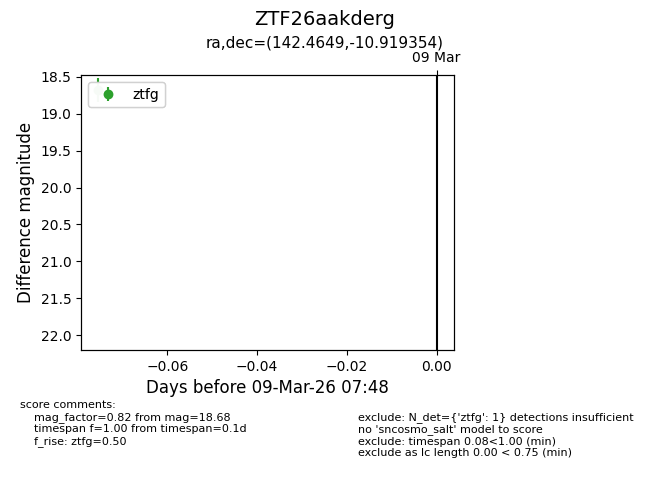
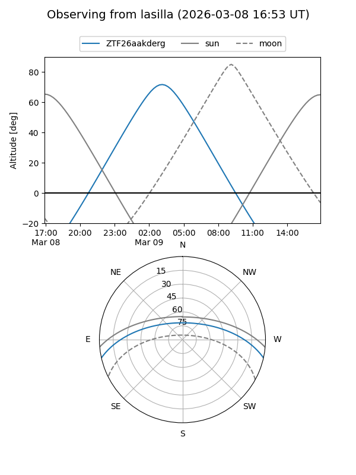
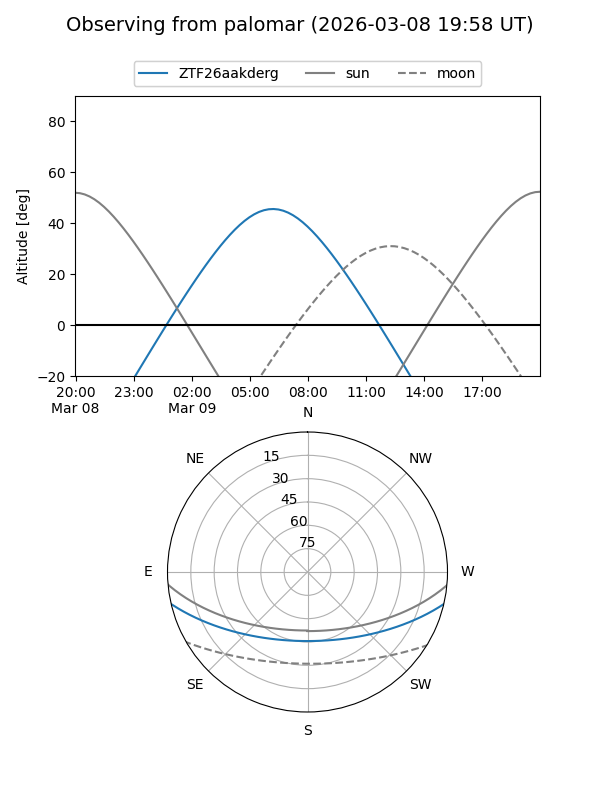

ZTF26aakderg
Target ZTF26aakderg at 2026-03-09 07:49
Aliases and brokers:
FINK: link
Lasair: link
ALeRCE: link
alt names
ZTF26aakderg (ztf,fink_ztf)
Coordinates:
equatorial (ra, dec) = 142.4649,-10.91935
equatorial (HMS+DMS) = 09:29:51.57,-10:55:09.68
galactic (l, b) = (243.9019,+28.08082)
Flags:
Photometry:
last ztfg=18.68
1 ztfg detections
Lightcurve

Visibility


Additional plots